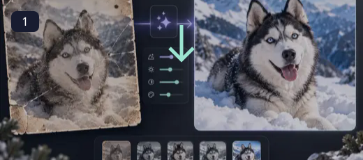
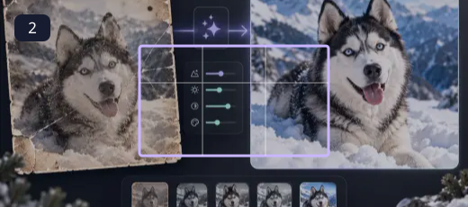
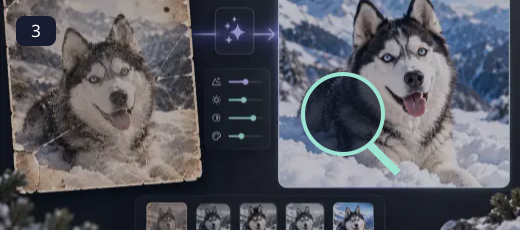
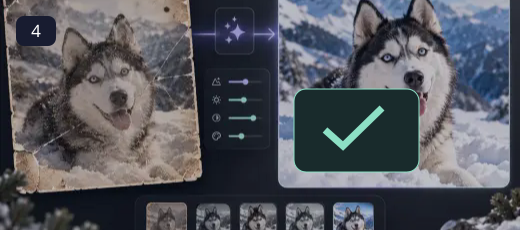

AI Old Photo Restorer
Send a damaged photo to a configured restoration model.
Model-based editing can help with tasks that ordinary geometry cannot solve, such as synthesizing an expanded background or reconstructing a damaged region. Its output is an interpretation and can invent detail. Review faces, hands, writing and repeated textures carefully. Use portraits with permission, and keep generated alterations out of records that need to remain an accurate account of an event.
How to use AI Old Photo Restorer ↓How to use AI Old Photo Restorer

Choose an image you may edit
Select an image you own or have permission to edit. The workspace describes the processing boundary before upload.

Set a mask, prompt or enlargement
Send a damaged photo to a configured restoration model. OCR runs locally after its engine and language models download. Other AI workspaces contact the configured processing endpoint only after you choose Run and consent to the upload. Availability depends on the model services enabled by the site owner. An unavailable service is shown explicitly; a standard resize or softening filter is never presented as an AI result.

Confirm cloud processing and run
Review the chosen settings and confirm the upload. The status panel reports an unavailable service rather than fabricating an output.

Review and download the generated result
Inspect the model output for invented details, then download the result if it suits your task.
Useful editing, with an honest processing boundary
OCR runs locally after its engine and language models download. Other AI workspaces contact the configured processing endpoint only after you choose Run and consent to the upload. Availability depends on the model services enabled by the site owner. An unavailable service is shown explicitly; a standard resize or softening filter is never presented as an AI result.
- Send a damaged photo to a configured restoration model.
- Use a dedicated URL and controls tailored to this operation.
- Keep the source separate from the downloaded result.
- Read visible output dimensions, format and processing status.
OCR runs locally after its engine and language models download. Other AI workspaces contact the configured processing endpoint only after you choose Run and consent to the upload. Availability depends on the model services enabled by the site owner. An unavailable service is shown explicitly; a standard resize or softening filter is never presented as an AI result.
Questions, answered
What does AI Old Photo Restorer do?
Send a damaged photo to a configured restoration model.
Does it change my original file?
No. The workspace exports a separate result. Keep the source if you may want another version.
What should I check before using the result?
OCR runs locally after its engine and language models download. Other AI workspaces contact the configured processing endpoint only after you choose Run and consent to the upload. Availability depends on the model services enabled by the site owner. An unavailable service is shown explicitly; a standard resize or softening filter is never presented as an AI result.
Are there any practical limits?
The site owner must enable a compatible processing endpoint. Model output can contain errors or invented detail.
Will this replace my original file?
The tools create a separate output. Keep the original until you have checked the exported file; the site does not provide cloud project backups.
Can I publish the result?
Use source media you own or have permission to edit. Check the destination’s requirements and the rights of anyone shown before publishing.